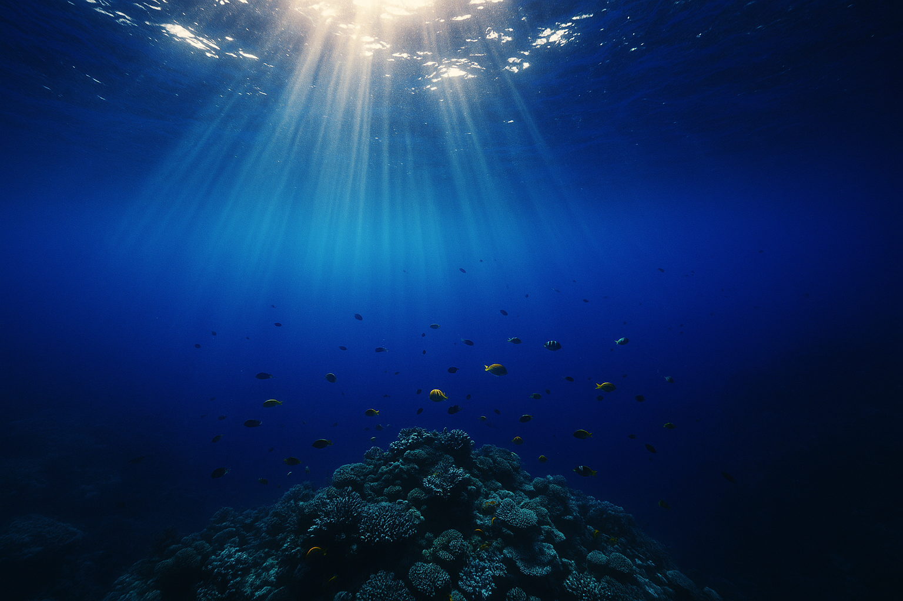
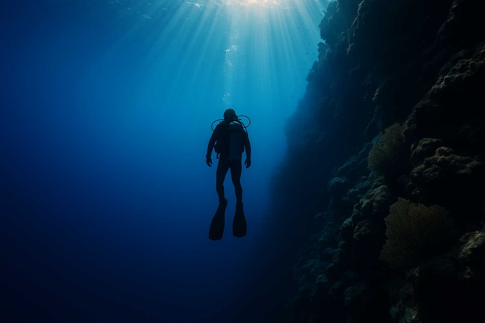
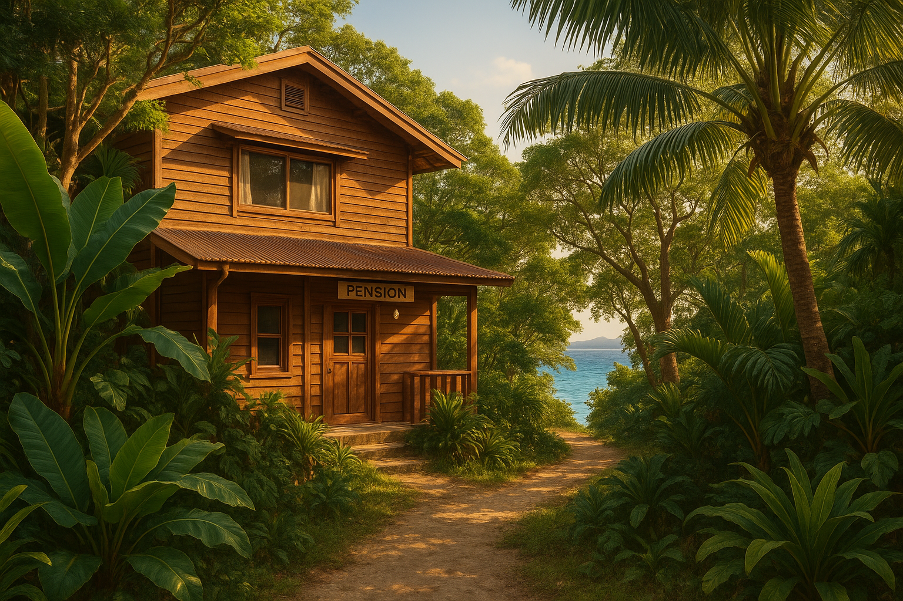
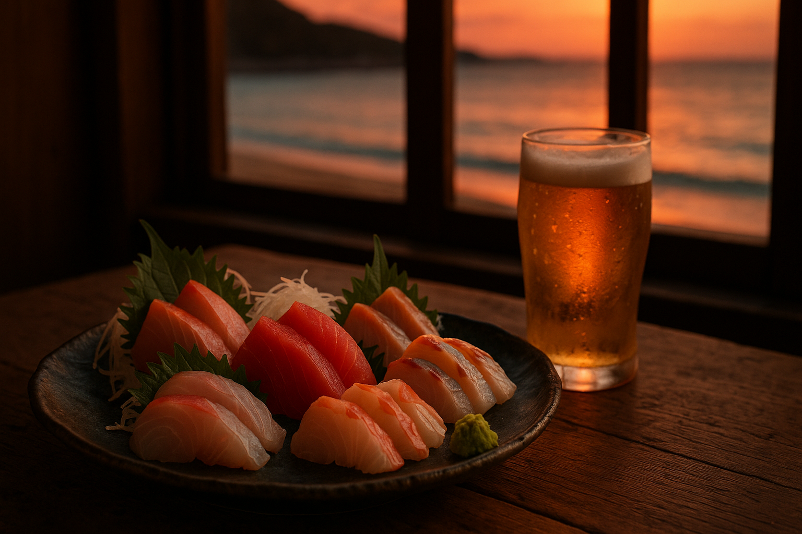
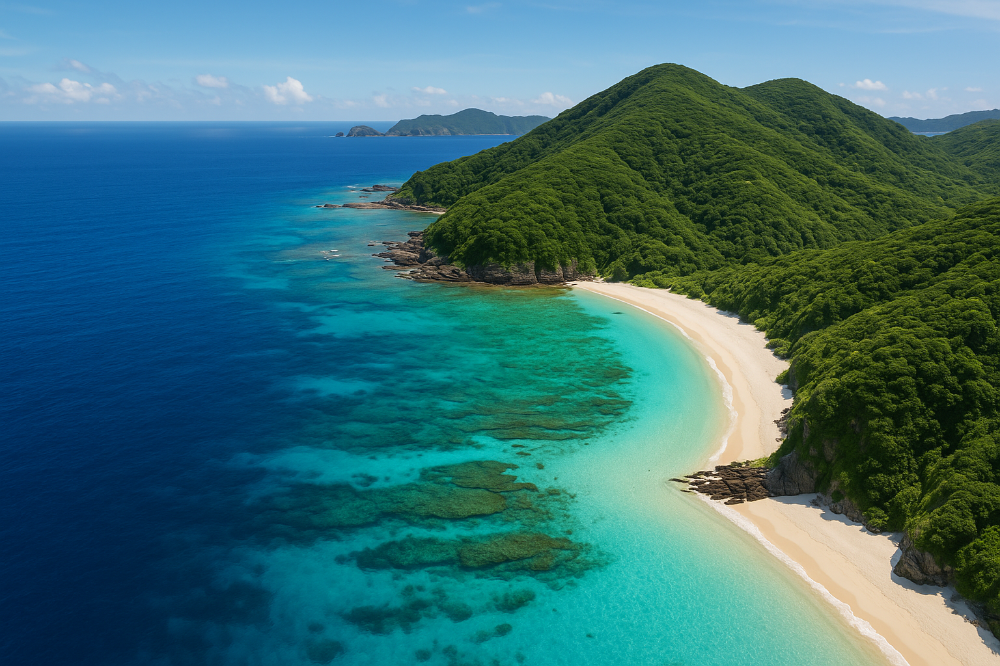

Tokashiki Island · Kerama · Okinawa
Into the Kerama Blue — a colour the sea keeps only here.
透明度30メートル以上。慶良間諸島の海は、「慶良間ブルー」という固有の名前を与えられるほど、どこにもない深さと輝きを持っています。
Kerama Blue is not a brand — it is what the sea genuinely looks like here. Clarity beyond 30 metres. Coral reefs of extraordinary richness. Tokashiki Island is the island you reach only if you decide to.

Diving
PADIインターナショナル認定5スターリゾートとして、ファンダイブから体験ダイビング、ボートシュノーケリング、PADIインストラクターコースまで対応。複数のダイブボートで慶良間の海に向かいます。
PADI 5-Star Certified Resort. Fan diving, experience diving, boat snorkeling. PADI certification from beginner to instructor. Multiple boats, Kerama-certified instructors.
Stay
ペンション、ログハウス、古民家、グランピング。渡嘉敷の自然に包まれた4つのスタイルで、それぞれの島時間を過ごす。
Four ways to stay on Tokashiki: pension, log house, traditional inn, glamping. Every style grounded in the same island pace — slow, removed, genuinely quiet.

渡嘉敷島 — TOKASHIKI ISLAND

Restaurant
島野菜と慶良間の新鮮な海産物を使ったレストラン。74席。阿波連浜まで徒歩1分の場所から、夕暮れの海を見ながらどうぞ。
74 seats. One minute from Aharen Beach. Island vegetables and fresh Kerama seafood — what you dove past in the morning, on the table that evening.
Car Rental
「くじらレンタカー」で渡嘉敷島を自由に。透き通った阿波連浜から、展望台まで。島の小さな道も、あなただけのものに。
Kujira Rental Car — explore Tokashiki Island at your own pace. From Aharen Beach to the island viewpoints, the small roads of the island are yours.
Credentials

Tokashiki Island — Kerama, Okinawa
Access
沖縄本島・泊港から高速船で約35分。渡嘉敷島へのアクセスは、決して難しくはありません。ただ、来ようと決めた人だけが来る場所です。
35 minutes by high-speed ferry from Tomari Port, Naha. Not far — but only those who intend to arrive, do.
SeaFriend Co., Ltd. · Tokashiki Island · Kerama, Okinawa
Reserve Your Dive ご予約・お問い合わせはこちらinfo@seafriend.jp · www.seafriend.jp · 渡嘉敷島 阿波連